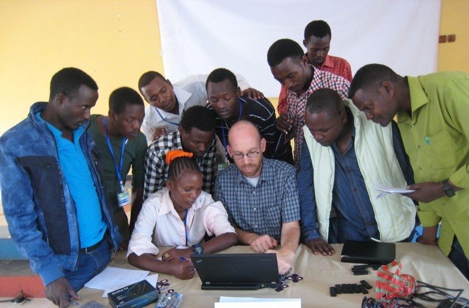
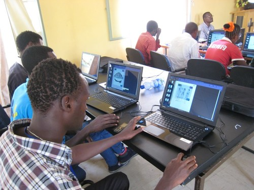
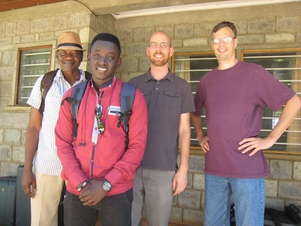
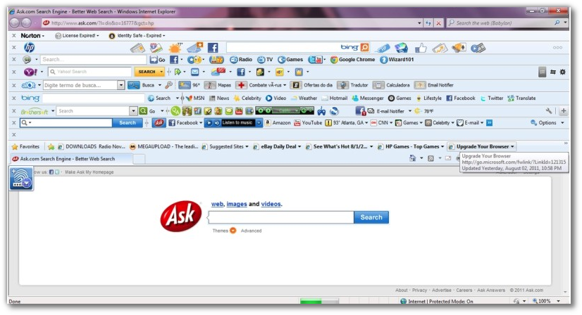

Why Linux: a case study from our Organization* in NE Africa
by Rik Shaw

In 2012, our Organization, which supports translation and literacy projects in NE Africa, began migrating our computer operating systems from Windows to Linux. As of March 2014, all machines in this NE Africa location were migrated to Linux. As of 2019, several other of our Organization’s locations in Africa, North America, and Asia, have begun to embrace Linux, accounting for several hundred additional installations worldwide.
I would like to explain our motivation for making this choice, the outcome of this move as we have seen so far, and why we feel that Linux is the best operating system choice for our work for both national colleagues and partners with low education and technical skills and for more experienced national colleagues and expats working alongside them. I also want to be clear up front in suggesting that our Organization should seriously consider increasing efforts to enable users in developing countries to use Linux in their translation and literacy efforts.
Largely our consideration of Linux as the preferred option has come through several years of observation of computer use by national partners and colleagues that have low levels of formal education and are “new to computers”. Yet these users are involved with language, literacy, and translation work, often working independently without adequate training or supervision. Often I see these individuals struggle with several aspects of Microsoft Windows that prevent them from growing in their productive use of computers as a major tool in their work.
In my observations, I have found that Linux has addressed many of these problems in freeing them to focus on the work at hand rather than being confused and challenged by repeated issues with Microsoft Windows. While we are able to largely address many of these “repeated problems with Microsoft Windows” with our Organization-owned computers and directly managed and employed staff computers, these continual problems are real in the day-to-day world of those that we are coming alongside in the broader efforts of translation and literacy such as partner organizations and other individuals using their own personal computers for the work. I hope that through the following discussion some of these inherent problems with Windows and the suggestive solutions that Linux addresses will be made more clear.
Linux is Free, but is it “viable for our work”?
Obviously the main argument people may use when promoting Linux is that it is “free” (it doesn’t cost money). Of course this is quite relevant when considering our target users in a developing-world context that struggle to make it day-to-day to meet the food and shelter needs of their families. But I think we all understand this issue, and want to save money where possible. Some skeptics may suggest that “it is free but it isn’t viable for our work”. I suggest otherwise, and hope to outline some of the reasons as I go along in this discussion.
So, indeed the cost savings of moving to Linux would be quite significant for our Organization but also especially for nationals partnering alongside us in the efforts, especially when the recurring costs of anti-virus software and the costs of Microsoft Office are added.
Yet I am not going to talk much about Linux not costing money since the main point is that it needs to be seen as viable for use first before the cost savings can even be considered. For this reason, rather than discussing cost savings, I want to focus on the other benefits of Linux being free, in a much broader sense of the word that implies “freedom for the users”. Much of the rest of my discussion will center around the ways that this freedom makes Linux the best choice for many of our computer usage situations in our Organization, particularly in the developing world context.
Free means Free from Viruses
…currently, but also read on about Linux’s better chances at staying this way in the future
The main benefit that my African IT colleague sees with Linux is that it is largely considered virus-free. One of the biggest struggles for this colleague is helping Windows users fix up major “virus messes”. He spends a lot of time trying to keep their anti-virus software up to date and running. Yes, products such as NOD32 or Symantec Endpoint are more effective than many of the “free” anti-virus options (not “free as in freedom” as I will refer to here but only free as in “no payment required” and subjecting the user to included advertising, continual reminders to upgrade to the paid “pro” version, and additional bloatware installed “for free”). But the challenges of keeping everything up-to-date and organized with poor internet connections, license management, etc., in a world that has many diverse demands placed on him means that in practice this IT colleague often is not successful in keeping things working smoothly for Windows users. It takes a lot of organization to take advantage of the cost savings and “keep on top of things”, and often he is distracted with other pressing issues.
After a machine is compromised, of course the first thing viruses do are disable the anti-virus tools and their updates, etc., so it gets to be a complicated bit of cleanup. This colleague’s strengths are many, but they are not in areas of organization and being detail-oriented. It is very important to note that I would suggest many of our national colleagues or partners that didn’t grow up in a highly-academic society probably aren’t as detail-oriented as consistent and organized computer use and management requires. The result is that often these cleanup tasks are not fully completed, meaning that in practice there are many vulnerable machines floating in and out of our offices. For example, the “market” is used for color print jobs, and it is guaranteed that after someone prints at the market they return to their personal computer and then viruses such as the “hide all your valid files” problems appear, even though these machines have paid licenses of professional anti-virus installed, yet may be negligently behind in their updates.
Our “Organization owned machines” are largely immune to these daily hindrances due to auto-run being disabled and running corporate licenses of Symantec Endpoint with scheduled updates applied. But in this modern era of “enabling partner organizations”, it is very clear that we as trained Organization members and staff that have access to discounted software are not the only ones we need to strongly consider. Personal users and national partners in and out of our offices don’t have such access to discounted security tools, and we don’t have full control of their computers to provide it even if it is legally usable.
It is a continual headache and cycle of confusion, time, and concern. Many have stated that the number 1 reason they are wanting to go with Linux is because of the virus problems with Windows.
The most obvious reason Linux doesn’t have the virus and malware problems of Windows is because it has a much smaller market share. Indeed in the future, however, Linux can (and will) be targeted by virus and malware hackers. But I think that Linux will remain more resistant into the future for these key reasons:
Linux was designed “from the ground up” as a networked operating system. Rather than needing to “patch in security features after the fact” like “Windows User Access Control” that showed up with Windows Vista and later, Linux has been designed from the beginning as a multi-user networked system with “smart authorization” required for system modifications.
Since Linux is open source, it means the code is available for anyone to review. The common saying is “More eyes make fewer security flaws”. It may take a motivated individual to do this, but these same motivated individuals can also apply patches should they find a possible vulnerability. There doesn’t have to be a “waiting and hoping that the corporation will fix its security flaw”. Proprietary software, by being closed, is inherently unknown and unreviewed by the outside world as to the potential loopholes that could be maliciously exploited.
Since Linux is by far the predominant server platform in the world, especially on the Internet, security issues are a huge corporate concern, and therefore there is a lot of money flowing into Linux to ensure that known security flaws are quickly fixed.
Free means Freedom to Choose
…which means Linux can be more Simple for Our Users
One “negative” brought up by many about Linux is that there are “too many choices”, making it complicated for a new user to know which direction to go. Indeed, there are many different desktop environments, as they are called, to choose from with Linux. I argue, however, that this just means it is more difficult for experienced IT people such as myself to make a decision as to what is the preferred direction to promote to developing-world friends and colleagues. So, I do have additional work in continually evaluating the available options.
But with these many choices comes the freedom to use an environment that is well tailored for these targeted users. The version of Linux we are using and promoting is Wasta-Linux, which is a customized version of Ubuntu using Linux Mint’s acclaimed Cinnamon desktop environment. Cinnamon provides a familiar, traditional “Windows look and feel” for the user: in our testing with national users this familiarity is very important for those making the transition to Linux. Many in the Linux world want something “different than Windows”, but in our use-case I feel it is important to emphasize that day-to-day usage doesn’t have to be much different from a familiar “Windows style workflow”. Since Linux can run our core applications like Paratext, FieldWorks, Adapt-It, Libre Office, Thunderbird, Firefox, Skype, etc., the familiarity of application use is also there for beginning users.
Contrast this familiarity of Cinnamon with Windows 8 interface forced on users some years back. Indeed this “Modern UI” may even have had several benefits for users after “getting used to it” or if one has a “touch screen” device, but for many people the were left frustrated and helpless to choose an alternative interface. For our Organization’s low-tech national users it was going to take significant training efforts to be able to use. The complication and confusion for national users I tested Windows 8 with means showed clearly that there would have been a huge learning curve for them in feeling comfortable with such a different paradigm.

Thankfully, Microsoft finally caved in to several years of pressure and somewhat restored the traditional look in Windows 10. But the stark contrast between the traditional desktop apps and modern apps / Control Panel settings that jump the user back in “Modern UI mode” leave both advanced and beginning users alike very uncomfortable and confused.
The main point of this controversy surrounding the Windows 8 User Interface is that since Windows is NOT free there is no freedom to choose a different main layout to the system for users that may not meet the marketing segment that Microsoft is focusing on. I would suggest that, unfortunately, our developing-world colleagues and partners will never be able to gain this focus from Microsoft.
You have to ask how Microsoft can get away with ripping out their highly functional, traditional interface and enforce a completely new design without providing the user the freedom of choice. Even for IT, more and more freedom is lost as Microsoft removes options to control important things like the timing of massive Windows updates, or preventing auto-installed software/games. More and more, choices in Windows are being throttled, and that is the main point of this discussion since Linux restores the freedom to adjust defaults from Microsoft and others that favor bandwidth-rich areas, but hamper those in the developing world.
Back to NE Africa and our switch to Wasta-Linux, the national users I have helped switch to Wasta-Linux have now been operating independently for well over a year (as Organizational ex-pats have had to strategically withdraw due to various issues). I just had a Skype call a few days ago with one of them who has only been using computers for 2 years.
In summary, I think the choices in Linux that give an option to use a traditional layout like Cinnamon give us control to be able to target what will be most effective for our users and what will allow them to gain confidence in their use of computers.
Free means Freedom to Customize
…which means Linux installation and support can be more simple for our national IT workers and others
Another feature of Linux being “free as in freedom” means that people such as myself or our Organization’s Linux software development group in Calgary are able to “customize Linux installs” to be tailored for our specific use-cases. What I have done for our location in NE Africa is create a custom ISO of Wasta-Linux that is fully tailored and set up with all the software and settings needed for any national user in that location, including keyboards, fonts, language settings, software selections, etc.
To the benefit of the broader world of our Organization, Wasta-Linux can act as a “base” for any region or area that wants to further modify it by adding region-specific keyboards, standard training documents, etc., to have a ready-made installer customized for their situation. In fact, this is happening now in multiple countries around the world: resulting in ready-to-install usable systems tailored for low-tech lowly-educated users – or high-tech highly-educated ones: the point is anyone can use it inside or outside our Organization!
Wasta-Linux then allows my African IT colleague to be much more efficient and successful in installing the system. To see this, first let me explain how he does things with Windows and then compare that to what he does now with the customized Linux installer that I am able to keep updated and provide him for his use.
For Windows, when he needs to re-install a system (often he goes this direction because the cleaning of viruses, etc., is much more difficult for him than a full wipe-and-install for severely crippled machines), my African IT colleague first installs the OS and the OS Updates. This requires a genuine Windows key, which is unlikely for individuals’ personal computers to have, so we instead refer them to the “market”. After installing Windows, he then searches for various possible missing drivers (he mainly only deals with sound, video, and network drivers and ignores the other things that may not be working like the SD card reader, etc). Then he installs the Anti-Virus, and then the various software applications.

Each of these installs require managing and referencing organized license lists: in the case where it is a personal user it may require applications, payments, transfers, etc. Often the original keys for the user are missing or can’t be found, so then re-application or email is sent to get all this organized. Finally, after everything is installed, he then has to configure the system and software settings (which is often not done consistently, so then the user is confused by various things, so will later occasionally return to get extra things installed, re-configured, etc). Often this colleague will spend a minimum of 1-2 full working days to do this work for one crippled machine. Yes, there are tools that make this more efficient such as “wsus” to handle all the OS updates, etc., but again this takes organization and management which are not his strong points!
Side Note: For our “Organization owned machines” we have “standard image backups” of machines that can be restored that have several of these steps accounted for. If we consider our Organization machines only, then, much of this effort is not needed. However, again, I feel the need to emphasize that this age of re-imagining our our Organization interacts in the world and with partners implies we are looking far beyond Organizational-owned and directly managed computers.
In contrast, when my colleague uses our customized Wasta-Linux installer, the most difficult part is getting the machine to boot from the USB flash drive installer. Once he finds the key combination to boot from USB, the total install will take approximately 20 minutes. The system is already configured with all the software and settings necessary. The complexity in doing it is reduced, and the resulting install is consistent and complete. Things such as Keyman keyboards, Thunderbird, Skype, office software (Libre Office), etc. are all there updated and ready for use.
The install process is so easy I have worked with other “non IT support” national friends to teach them to install Wasta-Linux. I would never consider this with the Windows process above. In fact, I had one “pirated Windows computer market” shop owner wanting me to show him how to install Linux before I left NE Africa. I regret not being able to show him at the time, since the simplicity of it would have likely quite surprised him. I would have loved to have seen the look on his face after he saw how easy it was to install Linux.
Free means Free FOR ALL to use Genuine Software
…which means freedom from implicitly supporting software Piracy
Much Windows software is free-of-cost, but what I have observed is that often these “free programs” come with “wrapper installers” that load additional toolbars in your web browser, install additional advertisement software, etc. that eventually bloat the system and confuse the user. Yes, an experienced user will opt-out of these additional bloat-ware installs, but a novice ESL user will likely miss these “opt-out” options: leaving a system full of crud and possible conflicting utilities performing similar tasks but each doing things in ignorance of each other, ultimately to the detriment of the user’s experience.

Is this what “Free Software” means???
Largely, however, the value in Linux being “genuine free software” means that the reasons behind and problems associated with pirated Microsoft software (Windows and Office) are made irrelevant. Let’s be honest: none of my NE Africa friends are going to pay the costs of genuine MS software if their machines weren’t purchased with it pre-installed. In NE Africa it is very common to purchase machines without genuine Microsoft software installed (instead pirated versions of Windows are used). In fact, it is quite difficult to even find a machine with genuine MS software to purchase, and if it is found, it is often identical to another machine but at a much higher price. As Microsoft has gotten more advanced in their attempted prevention of pirated versions of Windows, the pirates have also gotten more advanced. Currently, I have observed in NE Africa that it is quite common for the BIOS of a computer to be hacked to allow a pirated version of Windows to be installed. The result is that often the display drivers, network drivers, etc., are all confused and it is a very difficult situation to resolve. So, regardless of the ethics of the situation, there are practical headaches introduced by pirated software. I say “enough is enough” in this crazy cycle of Microsoft and the pirates continually attempting to “one-up” each other.
Regardless of the practical problem of piracy, I strongly feel there are ethical concerns as well, even if many of the nationals I work with don’t necessarily see this issue the same way I do. Even where there is “no awareness of the illegality” of the situation, I want to urge us strongly that this is not an argument our Organization should use to justify the situation to ourselves. For me as a western background volunteer worker in an overseas assignment, I have been freed from this conflict through the use and promotion of Linux.
Again, Linux is not only free as in “no payment required”; it is also free as in “freedom”. Yes, there are discount (or fully covered) programs that many in language work in Africa are approved to use for Windows, anti-virus, office, etc., software (thanks to many for their efforts in this area to help make these items more reasonable for African workers!). However, “freedom” is much more preferred: Freedom means the user can re-distribute it, customize it to their use case, etc.. It is free for anyone that comes through my office door, including staff, partner organizations, personal computers, friends-of-friends computers, etc: not just employees or those that fit the criteria for “no-cost or discounted licenses”.
Our Organization’s Re-visioning for the Future
…Not “Why Linux?”, but “Why NOT Linux?”
Some have suggested it is important to question why Linux should even be considered, since it just “spreads us too thin with our limited resources”. But in light of the above reasons, I feel it is important instead to ask, “Why NOT Linux?” It is fully functional for many of our targeted users. It can be more simple for users, it can be more simple for IT support, it is free of cost, free of viruses, etc.: In large the consideration of Linux as a platform of choice for my national colleagues, partners, and friends counters a false underlying assumption: that we (Organizational members, national partners and colleagues, etc.) cannot be effective without Microsoft Office and Microsoft Windows.
To restate, what is happening in our part of NE Africa is certainly not an isolated case; other areas in our Organization are also moving this direction. As we consider our Organizations re-visioning for the future, we need to find ways of supporting nationals and national partners, so that they can participate more and more in Good Book translation. I see the opportunity to use Linux as a crucial step in this process for many people. In the past, we have automatically focused on what is best and easiest for ex-pats, as ex-pats have been the ones making the leadership decisions and organizing the efforts. But as we look toward migrating more to national administration and leadership, I feel a key piece in supporting this shift is using and sharing with them the tools and technology most appropriate for their context. In this case, I feel it critical that we consider it highly possible that Linux may be best positioned to provide this.
For the reasons laid out above I am suggesting that Linux being “free”, “secure” and “simple” (for novice users with basic computing needs) best meets the needs of our targeted users in developing countries. So, those of us that choose to use MS products (and other tools not available in Linux) can at a minimum do our best to facilitate compatibility and interoperability. Let our “standard” be that which ALL of us can share in together (Linux gives us this option).
* If you are curious about who we are and want to know more about our Organization’s work, please leave a comment on one of the forums linked below and someone will get in touch with you.